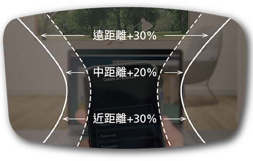
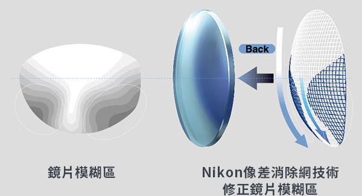
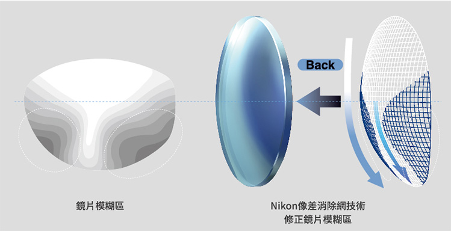

客製化經典型漸進鏡片
高水準的寬廣視野，Nikon高階日本訂製片入門首選
優點
- 舒適的遠中近視野。
- 像差消除網讓鏡片影像清晰自然。
您是否有這樣的經驗?
想開始戴漸進鏡片又怕不好適應？ 曾經戴過不好用的漸進鏡片從此不敢再戴？
量身訂製給您清晰的視野
雖然一般漸進鏡片都是依照您的度數訂製的，但還不能稱上是量身訂製。我們依據每個人的不同臉型，和不同的配戴位置，提供您量身訂製的專屬鏡片。

舒適的遠中近視野
客製化經典型漸進鏡片，將鏡片左右兩側的模糊區更優化，特別是拓寬遠方視野，讓您在視線抬頭與低頭瞬間，都可以平順的轉換視線。
像差消除網–減少鏡片邊緣變形，影像更自然
愈靠近漸進鏡片邊緣愈容易產生影像變形，這樣的現象在老花度數較高的時候更容易產生，我們透過高階鏡片才使用的像差消除網技術，反覆修正變形量，將失真率降到最低，看出去的影像自然真實。

